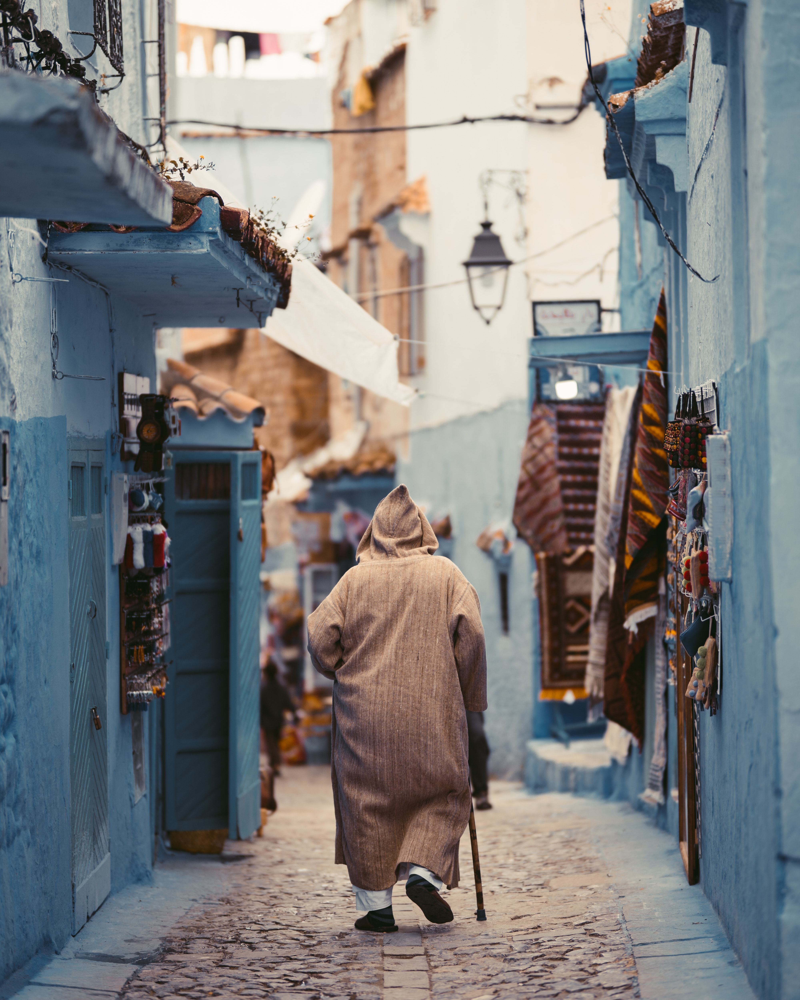
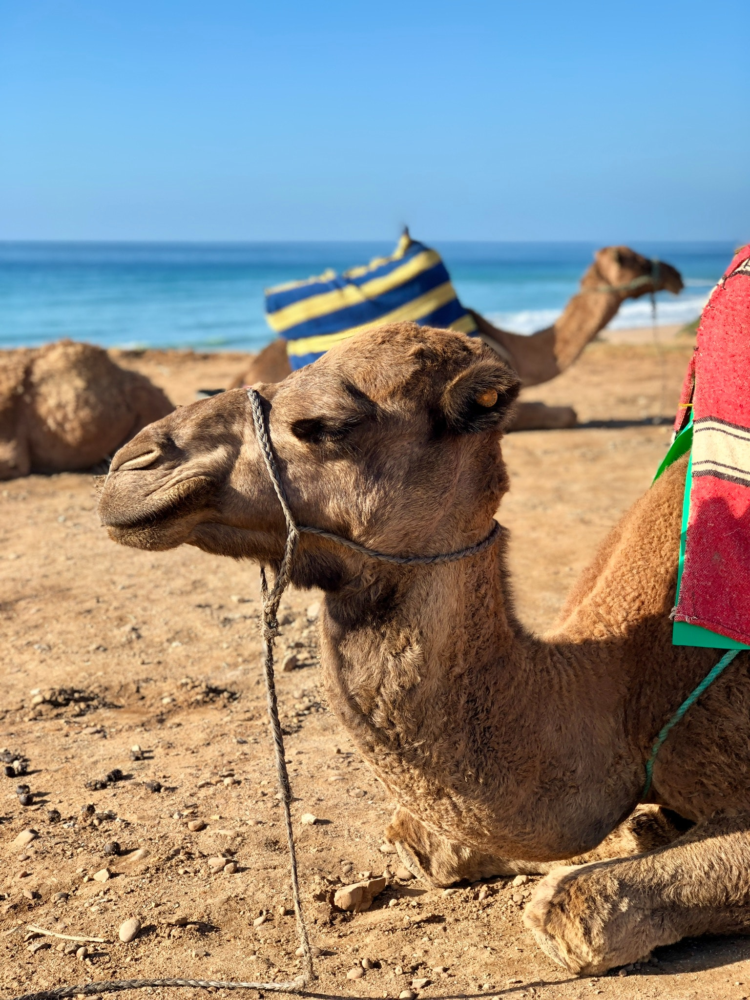
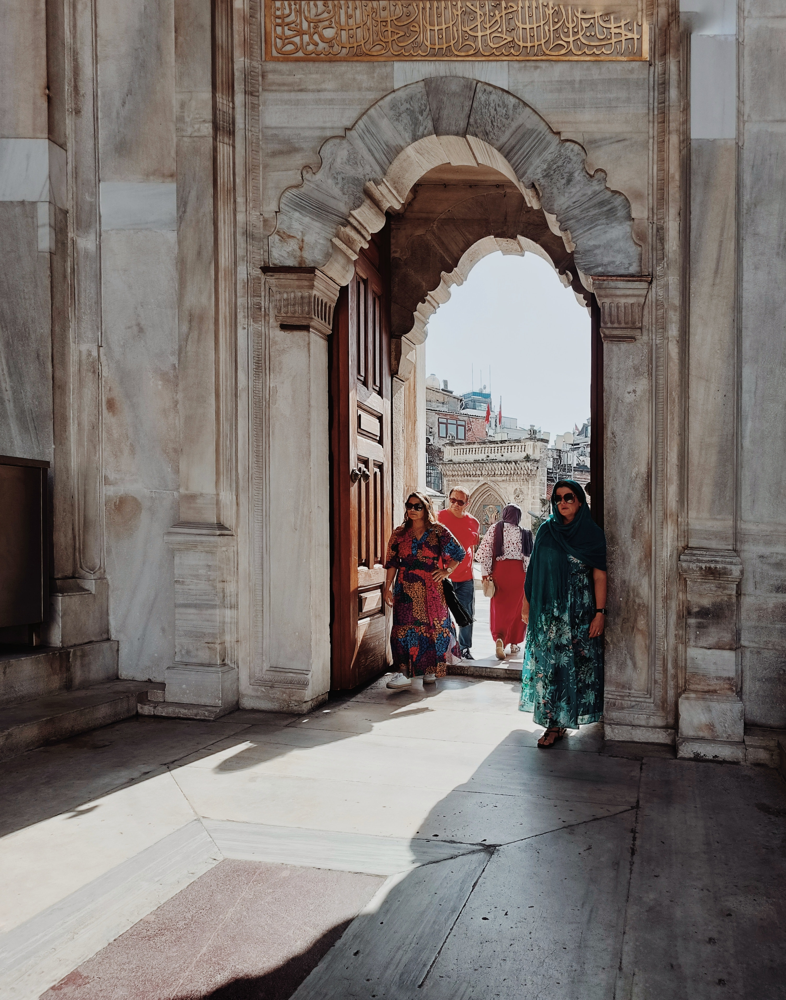
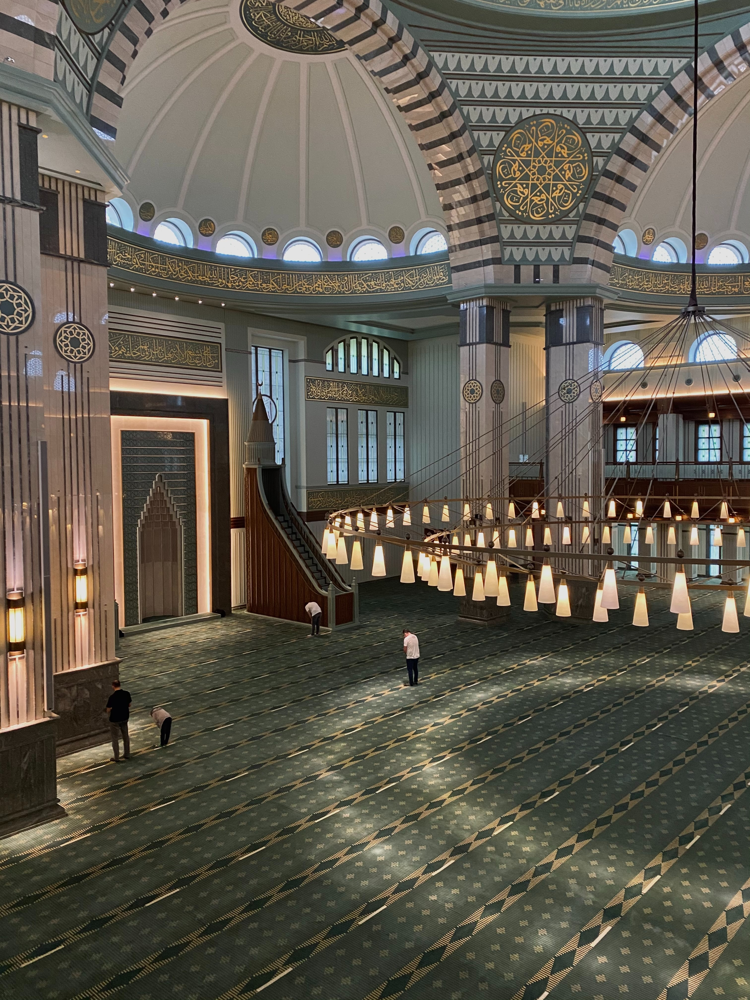

Verken het bruisende Tanger! Ontdek historische medina's, slenter over sfeervolle markten, en bewonder de prachtige architectuur. Bezoek bezienswaardigheden zoals de Grotten van Hercules en geniet van de rijke cultuur en geschiedenis van de stad.
-

Souk Bara
Souk Bara in Tanger, Marokko, is een bruisende markt vol kleurrijke kraampjes die lokale ambachten, heerlijk eten en exotische specerijen aanbiedt. Bezoekers kunnen verdwalen in de levendige sfeer en genieten van de rijke cultuur van deze marktplaats aan de Middellandse Zee. -

Achakar
Achakar, een betoverende kustplaats in Tanger, Marokko, verwelkomt bezoekers met uitgestrekte gouden stranden, kristalheldere wateren en een vredige ambiance. Het is de ideale bestemming voor zon- en natuurliefhebbers, waar men kan genieten van ontspannende wandelingen langs de kustlijn en de prachtige zonsondergangen over de Middellandse Zee. De charme van Achakar ligt in zijn eenvoud en schoonheid, waardoor het een plek is die in het geheugen van reizigers blijft hangen. -

Grot Van Hercules
De Grot van Hercules, gelegen in Tanger, Marokko, is doordrenkt met mythische betekenis en ademt een aura van mysterie. Volgens de legende rustte de Griekse held Hercules hier uit na het voltooien van zijn twaalf taken. De natuurlijke grot, met uitzicht op de oceaan, biedt bezoekers een prachtige en historische plek om te verkennen en te genieten van het uitzicht op de Atlantische kust. -

Cap Spartel
Cap Spartel in Tanger, Marokko, is een schilderachtig schiereiland waar de Middellandse Zee en de Atlantische Oceaan samenkomen. De vuurtoren van Cap Spartel is een iconisch kenmerk, omgeven door adembenemende kliffen en uitzicht op de zee. Dit rustige toevluchtsoord is een favoriete plek voor reizigers om te genieten van natuurlijke schoonheid en de ontmoeting van twee grote waterlichamen. -

Kasbah Museum
Het Kasbah Museum in Tanger, Marokko, is gehuisvest in een 17e-eeuws paleis in de historische Kasbah-wijk. Het toont kunst, ambachten en historische documenten, waardoor bezoekers een boeiende blik krijgen op de rijke geschiedenis en cultuur van Tanger. Een must-visit voor cultuurliefhebbers. -

The Grand Mosque of Tangier
De Le Grand Mosque of Tangier is een majestueus islamitisch monument in de historische medina van Tanger, Marokko. Deze indrukwekkende moskee staat bekend om zijn prachtige architectuur en rijke geschiedenis, en het trekt zowel gelovigen als bezoekers van over de hele wereld aan.